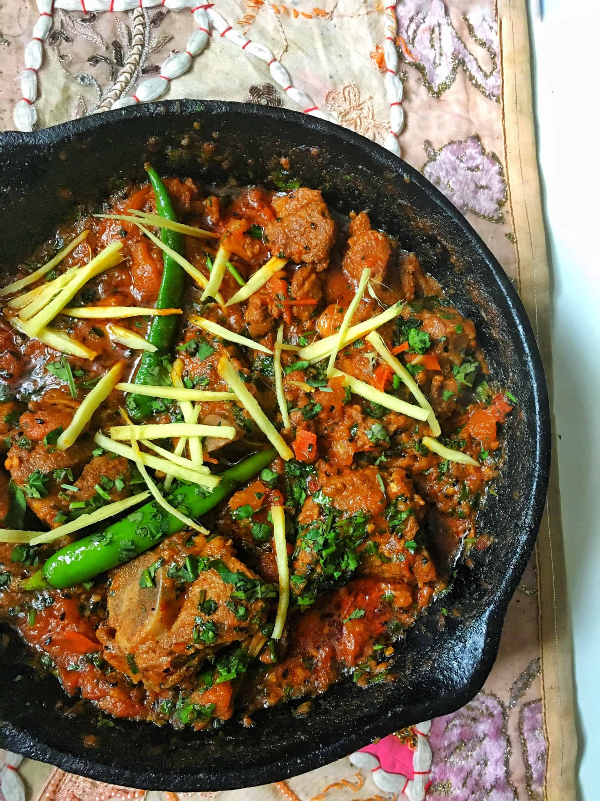

Lamb Karahi
Home

Description
There are some dishes in Pakistani Cuisine that really don't need an introduction.
Biryani,korma.They speak for themselves.Lamb karahi is also in this elite category.
Often found on menus of dhabbas and restaurants all across Pakistan.
Ingredients
for the meat
- 1 lb (500g) bone-in lamb (shoulder or leg), cut into 1.5-inch pieces
- 1/2 cup neutral cooking oil or ghee
- 1 tbsp ginger paste
- 1 tbsp garlic paste
- 1 tsp salt (adjust to taste)
for the gravy
- 4-5 medium ripe tomatoes, halved lengthwise
- 1.5 tsp coriander powder
- 1 tsp Kashmiri red chili powder (or mild paprika)
- 1 tsp cumin powder (or roasted cumin seeds)
- 1.5 tsp red chili flakes (adjust for spice)
- 1/2 cup water
Instructions
- Sear the Lamb
Heat the oil or ghee in a heavy-bottomed pan or traditional karahi over medium-high heat. Add the lamb pieces, ginger paste, garlic paste, and salt. Sauté on high heat for 7-8 minutes until the meat changes color and is lightly browned.
- Add the Tomatoes and Cook
Pour in 1/4 cup of water and place the halved tomatoes into the pan, skin-side up. Cover the pot and reduce to medium heat for 5-10 minutes to steam the tomatoes until their skins soften. Remove the lid and use tongs to peel off and discard the skins.
- Build the Gravy
Turn the heat to high. Use a wooden spoon to gently mash the tomatoes into a uniform base. Add the coriander powder, cumin powder, Kashmiri chili powder, and red chili flakes. Sauté everything continuously for about 5 minutes until the tomatoes have completely broken down, blended into a rich gravy, and you see the oil starting to separate on the sides.
- Simmer the Meat
Add the remaining 1/2 cup of water, cover, and let the lamb simmer on low-medium heat for 30–40 minutes, stirring occasionally, until the meat is fully tender.
- Finish with Yogurt and Spices
Once the lamb is tender, increase the heat and dry out any excess moisture until you reach a thick, glossy gravy. Turn the heat to low and gradually stir in the whisked yogurt to prevent it from curdling. Simmer for 2-3 minutes.
- Garnish and Serve
Stir in the green chilies, freshly ground black pepper, garam masala, and butter (if using). Turn off the heat. Garnish with the julienned ginger and chopped cilantro. Serve hot directly in the karahi with fresh naan or roti.